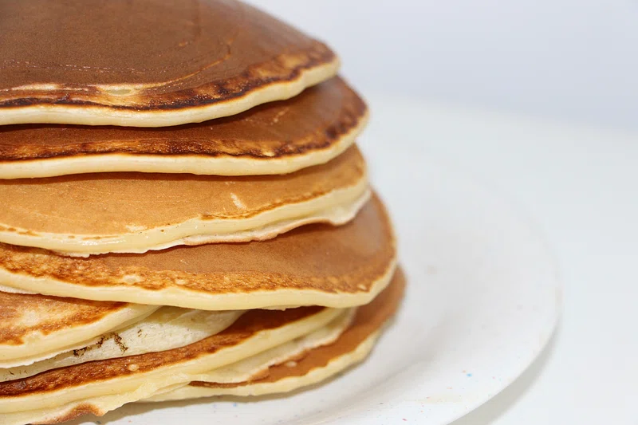

Back to Recipes
Pancakes

Ingredients
- 1 cup all-purpose flour
- 2 tablespoons sugar
- 2 teaspoons baking powder
- 1 teaspoon baking soda
- 1/2 teaspoon salt
- 1 cup buttermilk
- 1/4 cup milk
- 1 egg
- 2 tablespoons butter, melted
Instructions
- In a large bowl, combine flour, sugar, baking powder, baking soda, and salt.
- In a separate bowl, beat together buttermilk, milk, egg, and melted butter.
- Pour the wet ingredients into the dry ingredients and stir until just combined.
- Heat a lightly oiled griddle or frying pan over medium-high heat.
- Pour or scoop the batter onto the griddle, using approximately 1/4 cup for each pancake.
- Brown on both sides and serve hot.